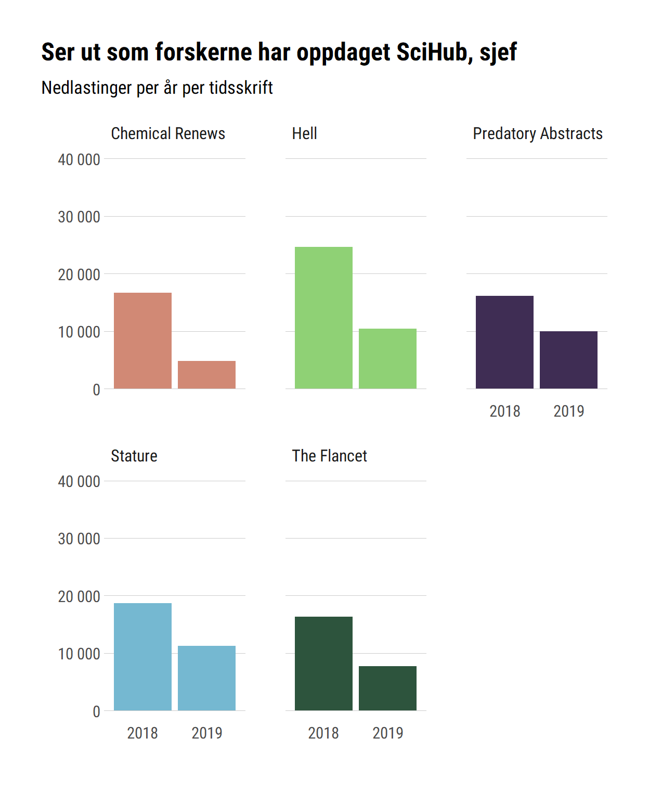

Ryddige data i en ryddig prosess
I denne modulen skal vi se nærmere på hvordan data inngår i vår hverdagslige analyseprosess.
Malt med bred pensel ser en typisk bibliometrisk analyseprosess ut som følger (bildet er en lett bearbeidelse av en figur i Grolemund og Wickhams R for Data Science):
Ideelt sett skal vi raskt kunne lese inn data og sette igang med det vi får betalt for å gjøre, nemlig analysere og forstå data for å kunne bruke dem til å fatte gode beslutninger. Dessverre går det ofte mye tid med på det første, forberedende skrittet i denne prosessen, og for mange er selve tanken på å skulle gå i gang med å samle inn og sammenstille data på en fornuftig måte nok til å få oss til å legge prosjektet dødt før det starter.
Sånn trenger det ikke å være. Med noen enkle prinsipper for god organisering av data i mente, og et relativt sett begrenset sett funksjoner tilpasset velorganiserte data kan mange av oss svare på de fleste spørsmål om for eksempel publisering eller forskningslitteratur vi kan komme på - gitt at dataene i det hele tatt fins, så klart…
tidyverse
tidyverse-dialekten av R er en samling pakker av funksjoner som følger noen felles, grunnleggende prinsipper for datahåndtering og -presentasjon, og som sammen danner en verktøykasse for alle skrittene i figuren over (og langt mer som vi ikke skal inn på i dette kurset - det fins “tidy” metoder for statistisk modellering, tidsserieanalyser, datatuttrekk fra nettsider, lesing fra og skriving til databaser, funksjonell programmering, og så videre og så videre). De er tre kjernepakker for utøvelse av godt datafag i tidyverse: tidyr for datarydding, dplyr for datamanipulering og ggplot2 for visualisering. Om du lærer deg å bruke disse kan du det du trenger for å utføre 90 % av rutineanalysene en bibliometriker utfører.
Alle disse verktøyene jobber klart best om de får datasett som er organisert etter noen enkle prinsipper. I denne modulen skal vi se på det underliggende konseptet med ryddige data.
Hva er ryddige data?
tidyverse inneholder de hyggeligste, minst rive-seg-i-hårete funksjonene i R, men de forutsetter at data kommer i et spesifikt format, som har fått navnet ryddige data. For å forstå hva vi mener med ryddige data kan det være lurt å tenke litt rundt hva data egentlig er for noe, og hva vi trenger det til.
Data er strukturerte observasjoner
I vår hverdag vil data som regel dreie seg om informasjon om vitenskapelig publisering, og de kanalene denne publiseringen foregår i. Vi er ikke interessert i hva som helst av informasjon om publikasjonene, men som regel et begrenset sett observasjoner som følger en fast struktur. Dette gjør publikasjonene sammenlignbare langs en eller annen dimensjon, og observasjonene til data.
Ting vi vil vite dreier seg som oftest om hvordan publiseringen passer inn i forskjellige samlinger av observasjoner, som vi så kan sammenligne. Eksempler på spørsmål som kan lede til interessante sammenstillinger er:
| Spørsmål om hvor, hvem, hva | |||
|---|---|---|---|
| Spørsmål | Type data | Sammenligning i én dimensjon | Sammenligning i flere dimensjoner |
| Hvilket år ble dette publisert? | Publiseringsår | Publisering i andre år | Internasjonal sampublisering over tid |
| Hvor ble dette utgitt? | Publiseringskanal | Publisering i andre kanaler | Endringer i tidsskrifters tematiske fokus |
| Hvem publiserte dette? | Forfatter | Publisering av andre grupper forfattere | Siteringsnettverk |
| Hvilke institusjoner er affiliert med denne publikasjonen? | Institusjon | Publisering ved andre institusjoner | Institusjoners relative innflytelse |
Sammenligninger av data i flere dimensjoner gir mer interessante analyser, men krever også mer data og bedre formulerte spørsmål. Poenget her er at det bare er mulig å håndtere disse spørsmålene hvis vi har data til å svare på dem, og hvis data kommer i en utvetydig struktur.
Struktur bestemmer handlingsrom
En grunn til å bruke tid på å få data inn i ryddige former er at en enhetlig datastruktur maksimerer handlingsrommet vårt. Når det vi jobber med oppfører seg på samme måte uavhengig av det faktiske innholdet kan vi slippe løs våre programmatiske hunder på datasauene og være trygge på at alle kommer vel hjem og kan telles på skikkelig vis.
Det som er heldig for den jevne bibliometriker er at vi i stor grad henter ut data fra databaser som allerede er organisert på en ryddig måte. Om vi henter tall fra DBH, Cristin (DUCT) eller en siteringsbase som Scopus eller Web of Science vil det vi leser inn allerede ha en ryddig struktur som vi bare kan gå rett igang med å analysere med de funksjonene vi finner i tidyverse.
Hvordan ser ryddige data ut?
Det er ikke alltid enkelt å si akkurat hva som er den rette strukturen på et datasett, men poenget med å ha et konsept for ryddige data er at det gir en konsistent måte å oversette meningsinnholdet i et datasett til strukturen på det samme. I ryddige data gjelder følgende:
- Hver variabel er en kolonne
- Hver observasjon er en rad
- Hver verdi er en celle
Dette kan igjen oppsummeres med en bearbeidelse av en figur fra Grolemund og Wickham:
Det er to store fordeler med å prøve å ha ryddige data. For det første gjør det analysejobben enklere og mer effektiv å ha en konsistent datastruktur, fordi vi da kan begrense oss til noen få, kraftige verktøy for å analysere data. Jo flere som baserer seg på et felles sett prinsipper for hvordan data skal se ut, jo mer kan vi trekke på hverandres arbeid uten å bruke for mye tid på å lage egne tilpasninger til andres mer eller mindre tilfeldige valgte disposisjoner for data.
For det andre passer ryddige data godt inn i hvordan R strukturerer data. Som vi så i forrige modul er R spesielt godt egnet til å gjøre operasjoner på hele vektorer av data raskt, og i et ryddig datasett vil hver kolonne i en tabell tilsvare en vektor med data av samme type (faktisk er den innebygde datatypen dataframe/tibble under panseret bare en liste med vektorer), som så kan opereres på. Slik spiller det plutselig liten rolle om det er ti, ti tusen eller ti milioner observasjoner vi har med å gjøre.
Noen uryddige data
Rydde datasett er alle like. Hvert uryddige datasett er uryddig på sin egen måte.
Sitatet over er riktig, men de fleste datasett som forbryter seg på reglene om at kolonner er variabler, rader observasjoner og celler verdier faller inn i en av fem kategorier:
- Kolonnenavn er verdier i stedet for navn
- Mange verdier slås sammen i én kolonne
- Variabler fins i både kolonner og rader
- Forskjellige nivåer av data er i samme tabell
- Data av samme type er spredt på mange tabeller
La oss se på en tabell som både er et eksempel på alle disse fem feilene og noe de av også som jobber med litteraturressurser vil kjenne igjen. Dette er fiktive nedlastingstall for fiktive tidsskrift, men på den formen forlagene ofte sender den (fordi den er i henhold til, sukk, bibliotekenes eget foretrukne rapporteringsformat COUNTER5):
| Journal Report 1 (R4) | |||||
|---|---|---|---|---|---|
| Journal | Reporting Period Total | jan_2019 | feb_2019 | mar_2019 | apr_2019 |
| Total for all journals | 44197 | 2883 | 3077 | 30501 | 7736 |
| Stature | 11284 | 160 | 883 | 9283 | 958 |
| Hell | 10394 | 877 | 517 | 6295 | 2705 |
| Chemical Renews | 4819 | 631 | 834 | 737 | 2617 |
| The Flancet | 7721 | 950 | 781 | 5196 | 794 |
| Predatory Abstracts | 9979 | 265 | 62 | 8990 | 662 |
Hvordan er dette uryddig? La oss se på de fem typene feil fra over, og hvordan denne tabellen eksemplifiserer dem:
- Navnet på kolonnene inneholder informasjon som er en variabel i seg selv, nemlig nedlastingstidspunkt.
- Faktisk er det to variabler i nedlastingskolonnene, både nedlastingsmåned og -år. Disse bør utgjøre hver sin kolonne i et ryddig datasett.
- Summen av nedlastinger er en egen rad midt i datasettet.
- Verdier (nedlastinger) og oppsummeringer av disse verdiene (“Reporting Period Total”) hører hjemme i forskjellige tabeller, fordi de tilhører forskjellige nivåer.
- Hvor er verdiene fra 2018? I en egen tabell. Om de skulle bli lagt inn i samme datasett måtte vi laget tolv nye kolonner.
I ryddig form
Tabellen over kan uttrykkes på en måte som følger ryddige prinsipper. Vi skal altså ha alle variabler i egne kolonner, og observasjoner av unike kombinasjoner av disse variablene som rader. Følgende kode tar den uryddige tabellen og omdanner den til en tabell som følger prinsippene om ryddige data:
# Ta den uryddige tabellen fra over
uryddig_tabell %>%
# Fjern total-kolonnen
select(-total) %>%
# Filtrer bort raden med totalverdiene
filter(Journal != "Total for all journals") %>%
# Gjør om månedskolonnene til to variabler
pivot_longer(
# Velg kolonnene vi vil snu
cols = c(jan_2019:apr_2019),
# Skill måneden og året på _-tegnet
names_sep = "_",
# Send kolonnenavnene til disse variablene
names_to = c("Month", "Year"),
# Sender verdiene til denne variabelen
values_to = "Downloads"
) Merk at denne koden, som kanskje ser litt kryptisk ut fortsatt, egentlig bare bruker tre funksjoner, select(), filter() og pivot_longer(), som henholdsvis velger kolonner, velger rader og transformerer mange kolonner med få verdier til færre kolonner med flere verdier - det fins en tilsvarende pivot_wider() når man vil gå andre veien. Resultatet blir seende ut som følger:
| Journal Report 1 (R4) | |||
|---|---|---|---|
| Journal | Month | Year | Downloads |
| Stature | jan | 2019 | 160 |
| Stature | feb | 2019 | 883 |
| Stature | mar | 2019 | 9283 |
| Stature | apr | 2019 | 958 |
| Hell | jan | 2019 | 877 |
| Hell | feb | 2019 | 517 |
| Hell | mar | 2019 | 6295 |
| Hell | apr | 2019 | 2705 |
| Chemical Renews | jan | 2019 | 631 |
| Chemical Renews | feb | 2019 | 834 |
| Chemical Renews | mar | 2019 | 737 |
| Chemical Renews | apr | 2019 | 2617 |
| The Flancet | jan | 2019 | 950 |
| The Flancet | feb | 2019 | 781 |
| The Flancet | mar | 2019 | 5196 |
| The Flancet | apr | 2019 | 794 |
| Predatory Abstracts | jan | 2019 | 265 |
| Predatory Abstracts | feb | 2019 | 62 |
| Predatory Abstracts | mar | 2019 | 8990 |
| Predatory Abstracts | apr | 2019 | 662 |
Dette framstår kanskje ikke umiddelbart som noe enklere å forholde seg til, men vi har nå data i et format som kan danne utgangspunkt for mange flere typer analyser enn vi opprinnelig hadde.
For eksempel er det enkelt å lage en oppsummerende tabell uten alle månedskolonnene:
# ta tabellen
ryddig_tabell %>%
# lag en gruppe av hvert tidsskrift
group_by(Journal) %>%
# lag en ny kolonne som er summen av nedlastinger *innen* hver gruppe
summarise(
Nedlastinger = sum(Downloads)
) %>%
# sorter tidsskriftene etter antall nedlastinger, flest øverst
arrange(desc(Nedlastinger))| Nedlastinger per tidsskrift, 2019 | |
|---|---|
| Journal | Nedlastinger |
| Stature | 11284 |
| Hell | 10394 |
| Predatory Abstracts | 9979 |
| The Flancet | 7721 |
| Chemical Renews | 4819 |
Eller vi kan lage en grafisk fremstilling av nedlastingsaktiviteten over tid (ikke vær redd om dette ser mye ut, vi skal lære om plotting litt senere i kurset):
# ta data
ryddig_tabell %>%
# send det til plotting
ggplot(
# spesifiser hvilke variabler som skal på hvilke akser
mapping = aes(
x = Month,
y = Downloads
)
) +
# lag et stolpediagram
geom_col()Og om vi har data fra tidligere år kan de enkelt settes inn i samme sett, i stedet for å leve i en egen tabell:
| Nedlastinger per måned | |||
|---|---|---|---|
| Journal | Month | Year | Downloads |
| Stature | jan | 2019 | 160 |
| Stature | feb | 2019 | 883 |
| Stature | mar | 2019 | 9283 |
| Stature | apr | 2019 | 958 |
| Hell | jan | 2019 | 877 |
| Hell | feb | 2019 | 517 |
| Hell | mar | 2019 | 6295 |
| Hell | apr | 2019 | 2705 |
| Chemical Renews | jan | 2019 | 631 |
| Chemical Renews | feb | 2019 | 834 |
| Chemical Renews | mar | 2019 | 737 |
| Chemical Renews | apr | 2019 | 2617 |
| The Flancet | jan | 2019 | 950 |
| The Flancet | feb | 2019 | 781 |
| The Flancet | mar | 2019 | 5196 |
| The Flancet | apr | 2019 | 794 |
| Predatory Abstracts | jan | 2019 | 265 |
| Predatory Abstracts | feb | 2019 | 62 |
| Predatory Abstracts | mar | 2019 | 8990 |
| Predatory Abstracts | apr | 2019 | 662 |
| Stature | jan | 2018 | 2083 |
| Stature | feb | 2018 | 7112 |
| Stature | mar | 2018 | 1314 |
| Stature | apr | 2018 | 8158 |
| Hell | jan | 2018 | 5180 |
| Hell | feb | 2018 | 8590 |
| Hell | mar | 2018 | 9048 |
| Hell | apr | 2018 | 1838 |
| Chemical Renews | jan | 2018 | 3386 |
| Chemical Renews | feb | 2018 | 5629 |
| Chemical Renews | mar | 2018 | 6540 |
| Chemical Renews | apr | 2018 | 1116 |
| The Flancet | jan | 2018 | 5414 |
| The Flancet | feb | 2018 | 3225 |
| The Flancet | mar | 2018 | 5081 |
| The Flancet | apr | 2018 | 2582 |
| Predatory Abstracts | jan | 2018 | 8266 |
| Predatory Abstracts | feb | 2018 | 2759 |
| Predatory Abstracts | mar | 2018 | 2756 |
| Predatory Abstracts | apr | 2018 | 2372 |
Vips har vi et grunnlag for en framstilling av utviklingen over tid:

Det viktige er å ikke la seg skremme av at tabellene blir lange og vanskelige å lese, men heller tenke hva man kan gjøre med dem.
Ryddige data i en arbeidsflyt
De enkle eksemplene over er selvfølgelig bare noe av det vi kan gjøre med ryddige data. I tillegg til enkle grafiske fremstillinger av forholdene mellom noen av variablene kan vi bruke denne strukturen til å bygge en fullstendig analytisk arbeidsflyt for de spørsmålene vi måtte lure på. Etter å ha jobbet en stund med en repoduserbar “forbered-forstå-forklar”-arbeidsflyt vil du opparbeide et sett standardanalyser som raskt kan oppdateres med nye data eller gjøres om til helt nye analyser med bare små tilpasninger. Latsabbens drøm KAN bli virkelighet…
Nest modul skal vi se nærmere på den midterste delen av arbeidsflytdiagrammet vi startet med: